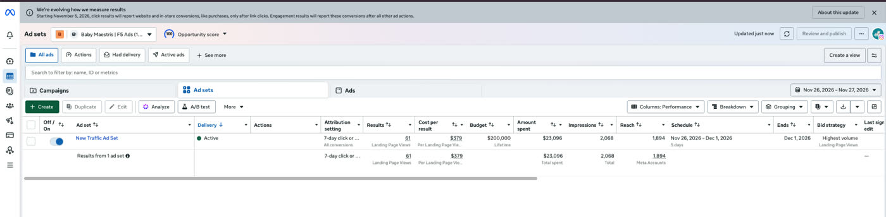
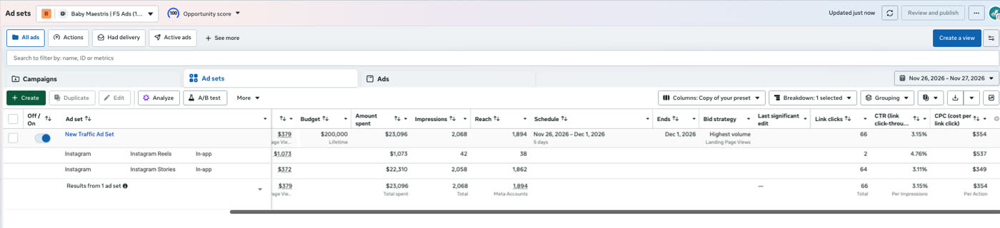
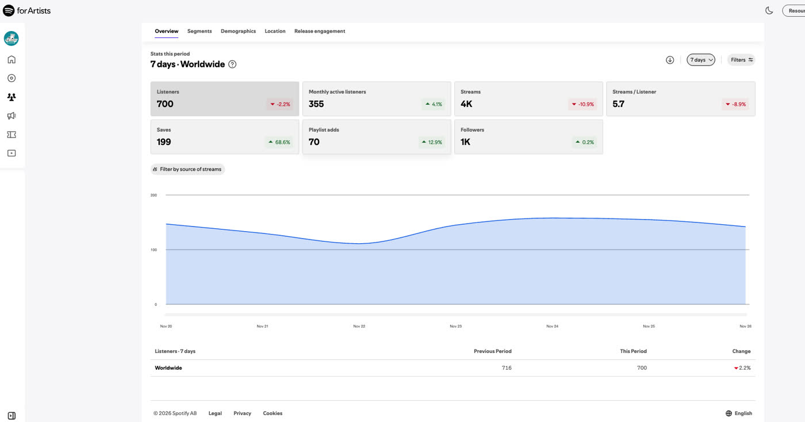

BM-EXP-02 · PRIMER CORTE · 26–27 NOV 2026
El tráfico funciona.
La adopción musical todavía debe demostrarse.
Primeras 24 horas de la campaña Meta Ads → Spotify para Baby Maestri. Una lectura de entrega, tránsito, costo, distribución por ubicación y el límite exacto de lo que aún no podemos atribuir.
CAMPAÑA ACTIVACOLOMBIACOP 200.000 · PRESUPUESTO TOTALLANDING PAGE VIEWS
CONCLUSIÓN EJECUTIVA
Meta registró 61 visitas al destino con COP 23.096 invertidos. El 92,4% de los clics terminó como visita según la plataforma y casi toda la entrega ocurrió en Instagram Stories. Es una señal prometedora de adquisición; todavía no es evidencia de escucha, guardado o recurrencia en Spotify.
01 · TABLERO DE 24 HORAS
La campaña ya está distribuyendo y generando tránsito medible.
Corte visible del 26 al 27 de noviembre. Los indicadores de clic usan las columnas específicas de enlace, no las métricas generales de interacción.

02 · EMBUDO OBSERVADO
De 2.068 impresiones a 61 visitas registradas.
La pérdida entre clic y visita es pequeña. Aun así, una visita registrada por Meta no equivale automáticamente a una reproducción confirmada por Spotify.
Impresiones servidas por Meta.
→
Clics en el enlace · CTR 3,15%.
→
Visitas al destino · COP 379 cada una.
92,4% · de los clics fue registrado como visita al destino
5 clics · sin visita registrada
03 · INVERSIÓN Y RITMO
El capital está controlado; el algoritmo aún tiene margen para aprender.
Meta no está obligado a repartir el presupuesto de forma uniforme. El primer día consumió menos que el promedio teórico diario.
11,55%UTILIZADO
COP 23.096 invertidos
De un presupuesto total de COP 200.000.
- COP 176.904 disponibles.
- Promedio teórico diario: COP 40.000.
- Primer día: COP 16.904 por debajo de ese promedio.
No acelerar todavía.
El costo por visita ya es observable, pero solo tenemos un día y la entrega está muy concentrada. Subir presupuesto o modificar ubicaciones ahora rompería la línea de aprendizaje antes de saber si el tránsito produce consumo musical.
04 · UBICACIONES
Instagram Stories está cargando casi toda la campaña.
La concentración es un hallazgo operativo, no una prueba definitiva de superioridad. Reels tiene una muestra demasiado pequeña.
Instagram Stories
98%
Instagram Reels
2%
| Ubicación | Impresiones | Alcance | Clics | CTR enlace | CPC enlace | Costo/visita |
|---|---|---|---|---|---|---|
| Instagram Stories | 2.058 | 1.862 | 64 | 3,11% | $349 | $372 |
| Instagram Reels | 42 | 38 | 2 | 4,76% | $537 | $1.073 |

LÍMITE DE CALIDAD DEL DATO
Los cortes no están perfectamente sincronizados.
El gasto por ubicación suma COP 23.383, mientras el total general muestra COP 23.096; también existe una diferencia de 32 impresiones. La brecha es pequeña y probablemente corresponde a actualización del reporte. Se conservará como discrepancia hasta el siguiente corte.
05 · SPOTIFY · LÍNEA BASE
La segunda mitad del experimento todavía no está disponible.
Spotify for Artists solo muestra datos hasta el 26 de noviembre. Este corte funciona como línea base previa; no permite atribuir resultados a la campaña iniciada ese día a las 8:00 p. m.
| Indicador · 20–26 nov. | Resultado | Variación | Interpretación permitida |
|---|---|---|---|
| Oyentes | 700 | −2,2% | Línea base global |
| Oyentes activos mensuales | 355 | +4,1% | Interés activo previo |
| Streams | ≈4.000 | −10,9% | No atribuible a Meta |
| Streams por oyente | 5,7 | −8,9% | Profundidad previa |
| Guardados | 199 | +68,6% | Señal a investigar |
| Adiciones a playlists | 70 | +12,9% | Catálogo completo |
| Seguidores | ≈1.000 | +0,2% | Estabilidad previa |

Lo que sí sabemos
La cadena anuncio → clic → visita está funcionando y puede medirse dentro de Meta.
≠
Lo que aún no sabemos
Si esas visitas escucharon, guardaron, siguieron al artista o regresarán al catálogo.
06 · DECISIÓN OPERATIVA
Conservar la campaña sin cambios y proteger el aprendizaje.
La siguiente decisión depende de nuevos datos, no de una reacción prematura al primer corte.
No intervenir todavía.
Mantener presupuesto, creativo, audiencia y ubicaciones. Confirmar la actualización de Spotify el 28 de noviembre y realizar una lectura de 72 horas que compare eficiencia de Meta con señales agregadas de consumo musical.
AHORACampaña sin cambios
28 NOVRevisar Spotify del día 27
72 HORASNuevo corte de placement y costos
+7 DÍASBuscar retorno y adopción
07 · CIERRE DEL DÍA
Primer aprendizaje real de adquisición paga para F5.
El sistema ya puede comprar y medir visitas. La siguiente frontera es demostrar que esas visitas se convierten en comportamiento musical valioso.
El recorrido técnico funciona.
La campaña entrega, genera clics y registra llegada al destino con una pérdida reducida entre clic y visita.
Stories absorbió casi toda la entrega.
Meta concentró el aprendizaje inicial en una sola ubicación, con costos inferiores a la muestra disponible de Reels.
Ya existe una capa de adquisición medible.
F5 puede conectar creatividad, pauta y destino. Ahora debe unir esa capa con inteligencia de consumo musical.
La calidad musical del tráfico.
No hay todavía datos posteriores de Spotify ni atribución individual Meta → Spotify.
QUÉ DECIDIMOS POR AHORA
No declarar éxito musical, no pausar Reels, no aumentar presupuesto y no modificar el creativo. Esperar el siguiente corte y aprender antes de optimizar.
Fuentes y límites. Capturas de Meta Ads Manager y Spotify for Artists compartidas el 27 de noviembre de 2026 en “🍼 BABY MAESTRI / Estructura”. Meta: corte 26–27 nov.; Spotify: 20–26 nov., mundial. Las visitas al destino son resultados reportados por Meta; no constituyen confirmación independiente de reproducción en Spotify. Los datos por ubicación presentan una discrepancia menor frente al total general y deberán reconciliarse en el próximo corte.